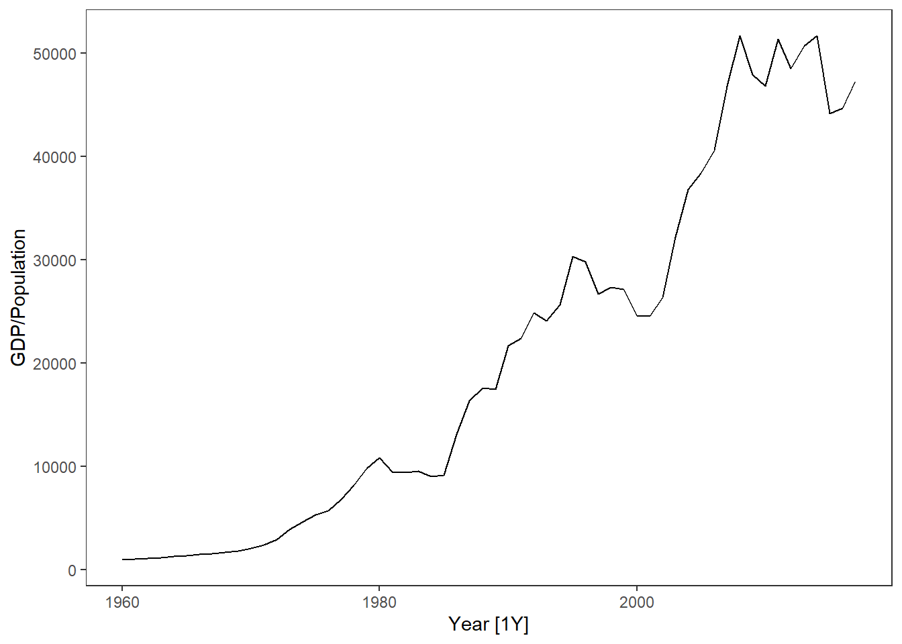
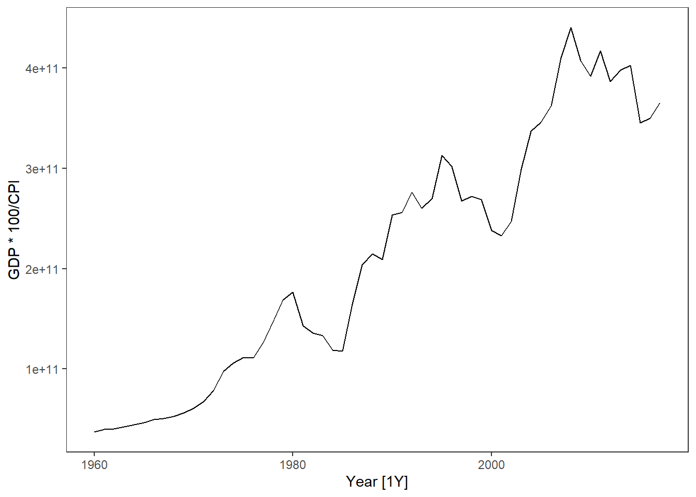

Exercises
- Use the simulated data from here. Compare the different methods with the truth from the simulation. Are there large differences?
Solution
- Use the global_economy data, select a country (e.g. Austria). Plot GDP, GDP per capita and GDP per capita inflation adjusted, GDP inflation adjusted.
Solution
library(fpp3)
library(tidyverse)
dat <- global_economy %>%
filter(Country == "Austria")
dat %>% autoplot(GDP)dat %>% autoplot(GDP/Population)
dat %>% autoplot(GDP/Population * 100/CPI)dat %>% autoplot(GDP * 100/CPI)
- In the global_economy data set, the CPI has a reference year of 2010. Do the necessary changes to inflation adjust GDP per capita with 1990 as reference year.
Solution
library(fpp3)
library(tidyverse)
dat <- global_economy %>%
filter(Country == "Austria")
# -- Extracting the CPI in 1990: --
cpi1990 <- dat %>% filter(Year ==1990) %>% pull(CPI)
# -- Transforming such that CPI1990 is 100 in 1990: --
dat <- dat %>% mutate(CPI1990 = CPI / cpi1990 * 100)
# -- Plotting Inflation adjusted GDP per capita: --
dat %>% autoplot(GDP/Population * 100/CPI1990) +
labs(y = "Inflation adjusted GDP per capita (1990 US$)") +
geom_line(aes(y= GDP/Population * 100/CPI), col = 2)
# -- Comparing the two CPIs: --
dat %>%
pivot_longer(cols = c(CPI,CPI1990)) %>%
ggplot(aes(x = Year, y = value, col = name)) + geom_line()+
geom_hline(yintercept = 100) +
scale_color_manual(values = c("red","blue"))+
geom_segment(x = 1990,xend = 1990, y = -Inf, yend =100, lty = 2, col = "blue")+
geom_segment(x = 2010,xend = 2010, y = -Inf, yend =100, lty = 2, col = "red")+
labs(title = "Differences between CPI with reference year 1990 and 2010",
y = "Consumer Price Index") +
theme(legend.title = element_blank())
Use the quantmod package to download data for another stock. Will a log transformation do a good job for this as well?
Use the guerrero feature to select a \lambda for the Box-Cox transformation on the data from the previous exercise.